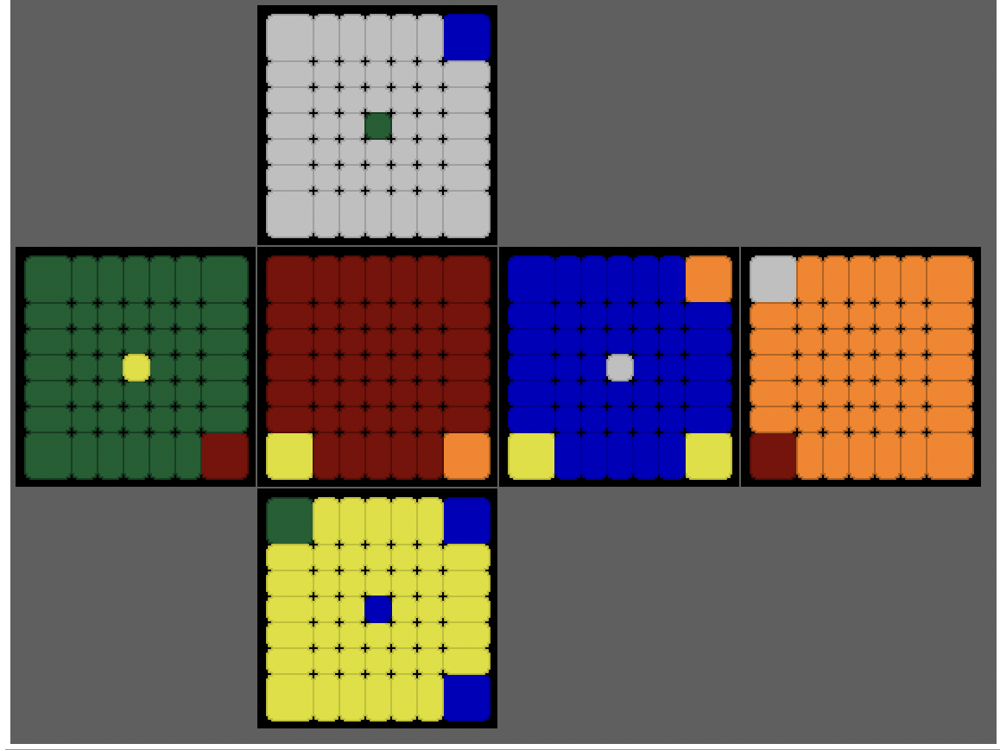

PROJECT 01 / AI & PUZZLE
Twisty Puzzle
AI Lab
キューブを解くAIを作り、その考え方を観察できる形にする。数学、探索、学習、可視化に加え、「探索そのものが解けたのか」「既知手順のfallbackで完了したのか」まで分けて残す、個人開発の実験室です。

THE QUESTION
AIは、人が知らない手順を
見つけられるだろうか。
スピードキューブでさまざまな解法や手順を覚える一方、大学院では群論を中心とした代数学を研究していました。さらにニューラルネットワークを独学で試す中で、三つの興味が一つの疑問につながりました。
人が使う既知手順を教えるだけでなく、AI自身に状態を評価させたら、どのような手順を良いものとして選ぶのか。その過程を自分の目で確かめるために、探索・学習・解析をまとめた実験環境を作り始めました。
完成した答えを出すAIではなく、試行錯誤している途中を観察できるAIを作る。
HOW TO READ THE LAB
画面を三つに分けると、
AIの試行錯誤が見えてくる。
全体画面には多くの情報がありますが、役割は大きく「状態を見る」「探索を追う」「判断を解析する」の三つです。それぞれを切り分けて見ると、AIが何を入力にし、どの手を選び、結果をどう評価したかがつながります。
01 / SEE THE STATE
パズルの現在地を見る
State Viewerは、現在のパズル状態を展開図で表示します。solveの進行に合わせて更新されるため、スクランブルから完成へ近づく変化を目で追えます。
灰色は部分問題などで評価対象から外したステッカー。パズルごとに専用の表示へ切り替わります。

02 / FOLLOW THE SEARCH
どの手を選び、
どの手を選び、
評価がどう動いたかを見る
Move Viewerでは採用した手順と、適用前後のValueを時系列で表示します。Policy Probabilityでは、現在の状態に対する各moveの選択確率を色と数値で比較できます。
Success Viewerは既定で「自力成功のみ」を表示し、Search2 / Search3が探索そのもので完成へ到達した回数だけを数えます。プルダウンでfallback・失敗を含む表示へ切り替え、「実験ログ」と「集計」から結果の内訳を確かめられます。


03 / ANALYZE THE DECISION
AIがどこを見たかを探る
Grad Viewerは、入力のどの位置が評価へ強く影響したかをパズル上に重ねます。Gradだけでなく、Integrated Gradients、Occlusion、Attention、Embeddingなどへ切り替えて比較できます。
Log Viewerには探索結果、学習指標、データ件数、メモリ状況に加え、実験ログの保存状況を集約。見た目の変化と内部の記録を往復しながら実験します。


EXPERIMENT LOG
「解けた」を、
一種類の成功にしない。
探索が完成状態へ到達した結果と、途中で探索を打ち切って既知手順群から選ぶfallbackによる完了は、同じ「完成」でも意味が異なります。最新版では、この二つを同じ成功数へ混ぜずに記録します。
各runにはパズル、Search2 / Search3などの探索モード、開始局面、採用手順、手数、実行時間、結果区分を保存します。GUIでは自力成功だけをSuccess Viewerに集計し、プルダウンでfallback・失敗も表示できます。「実験ログ」の直近10件からはsetupとmovesを確認し、対応パズルならWeb再生へ送れます。
RESULTS SO FAR
2020年の原型から、
試して残したもの。
最初の原型を作ったのは2020年。自分で設計した評価関数と探索方式Search2を中心に、少しずつ機能と対象パズルを増やしてきました。
2×2、Skewb、Pyraminxは比較的短時間で学習が進みます。3×3以上では実験条件の工夫が必要で、多分割キューブやMegaminxは現在も試行錯誤中です。
2-swapや3-cycleなどの部分問題では、探索そのものが見つけた手順と、既知手順群を使ったfallbackの結果を分けて見ます。自力探索でより短い手順が見つかったときだけを「AIが見つけた成果」として残し、再生ページへ送れます。
DESIGN & DEVELOPMENT
好奇心を、実験できる
仕組みに変える。
難しかったのは、探索に失敗した場合のfallbackや、学習・保存・解析が互いに影響する複雑な流れを、一つのアプリとして扱うことでした。特に、fallbackで完了した結果を探索成功として数えてしまわないよう、実験ログ・Success Viewer・Web成果を役割ごとに分けています。
このプロジェクトは現在も実験中です。学習済みの答えを配るのではなく、ランダムな状態からAIが何を評価し、どう変わっていくかを試せることを大切にしています。
GitHubで公開している版は、3×3キューブ・Search2 1体・NumPyのみで起動できる軽量構成です。多分割キューブや複数AIを使う画面も、各パネルの役割は共通しています。
今後は計算資源を広げることや、探索・学習に詳しい人と意見を交わすことが次の課題です。いつか、サイト上で挙動を試せる形にすることも目標にしています。
着想、評価関数、独自探索方式Search2、初期設計、Rubik's Cube・MegaminxのGUIと内部処理、初期のAI実験を組み立てました。
PUCTの考え方をもとにしたSearch3の実装補助、対応パズルの拡張、責務分割、公開用整理、自動テストにAIを利用。学習が進むことまで自分で確認して採用しています。
WHAT I LEARNED
解けたかどうかだけでは、
面白さは終わらない。
AIの結果だけを見るのではなく、その途中にある評価や失敗を可視化すると、「なぜその手を選んだのか」「人の定石とどこが違うのか」という新しい問いが生まれます。
数学で構造を考えること、キューブを手で回すこと、プログラムで実験すること。その三つを往復できるのが、このプロジェクトで一番気に入っているところです。